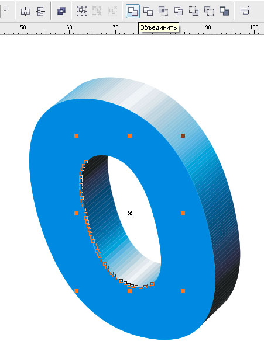
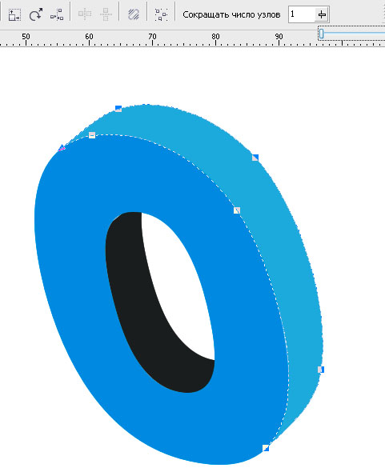
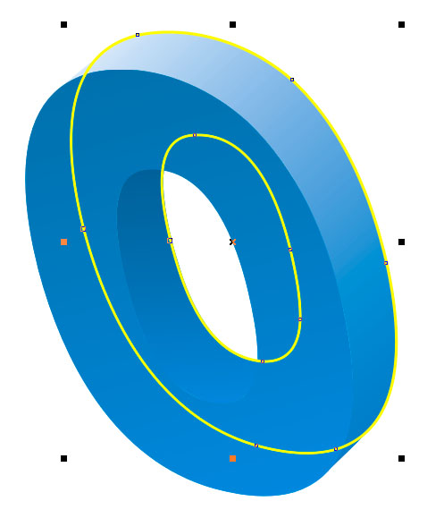
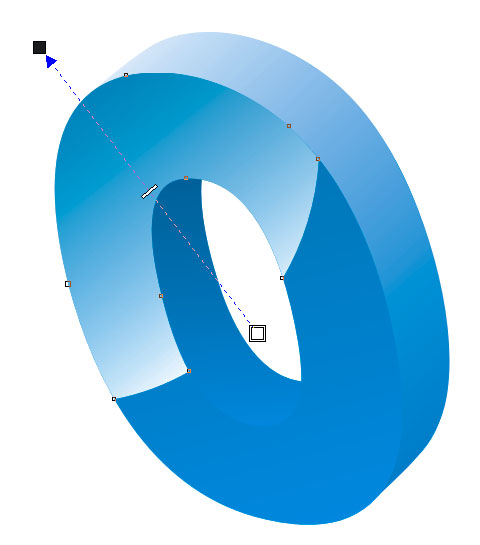
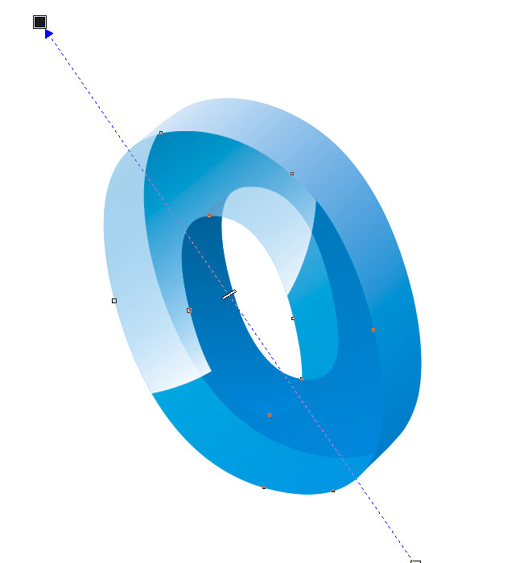

Дополнение к уроку «Весёленькие буковки»
В уроке http://cdrpro.ru/forum/45-487-1 "Весёленькие буковки" я предложил придание тексту динамики. По просьбе глубокоуважаемого мужчины в самом расцвете сил KarLsoNa попробую придать тексту стекляшности.
Предупреждаю, работа ручная и кропотливая, но несложная.
1. Рисуем буковку
2. Отменяем группу вытягивания (используем правую кнопку мыши)
3. Разгруппировываем
Торцы буковки рассыпаются на множество объектов, поэтому необходимо их объединить

По-необходимости сокращаем количество узлов

Задаём нужную заливку на гранях
Копируем и помещаем на задний план фронтальную часть
(выделил жёлтым, чтобы было видно)

Создаём окружность и пересекаем с фронтальной частью
Полученному блику задаём прозрачность

Задаём прозрачность фронтальной части

Теперь видно, что задняя чать несогеометрична.
Подравниваем её, чтоб не выпирала и т.д.
Я сделал прозрачными 2 объекта. Для меня этого достаточно.
При необходимости можно задать прозрачность торцевым частям, если должны быть видны соседние буковки на просвет.
Готово!
Всем удачи и творческих успехов!
Спасибо, очень понравилось!
Да,очень даже.Спасибо.
Это есть хорошо. Спасибо.
оо спасибо, попроую тоже)